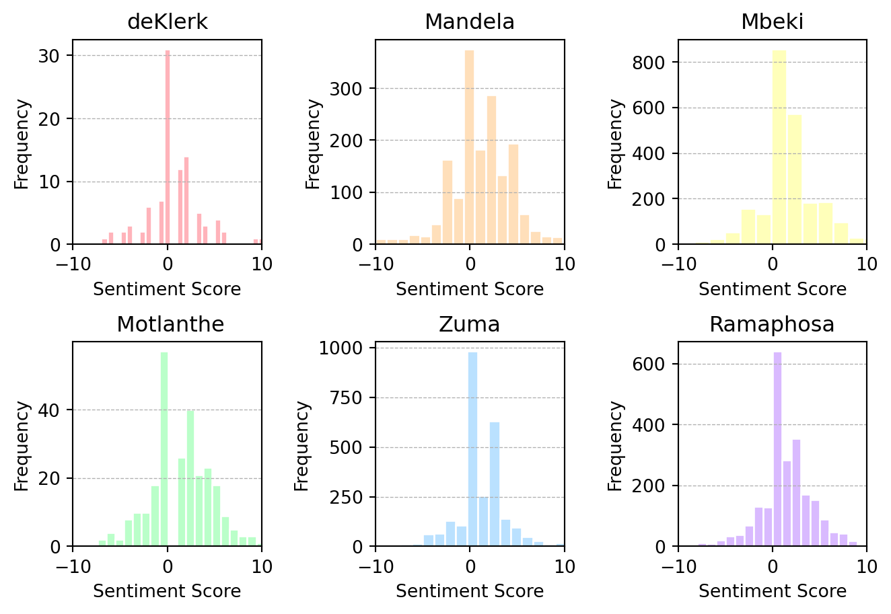
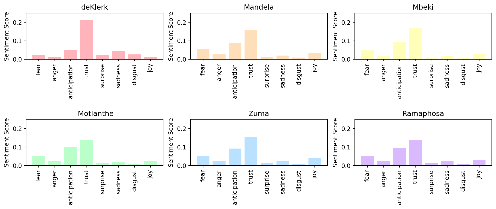
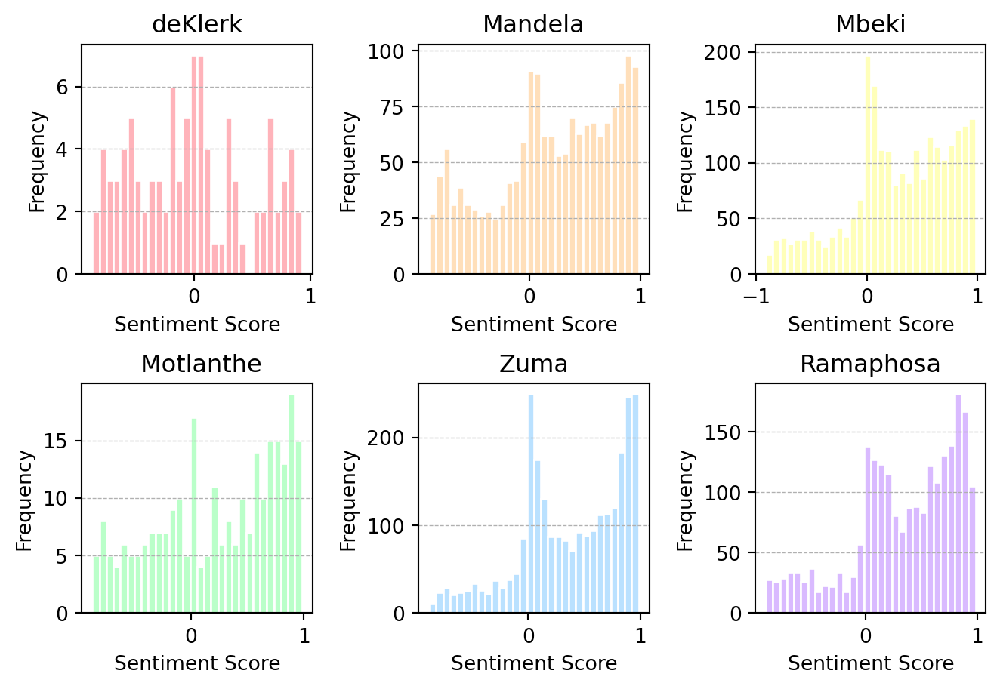

DSFI_A2
Introduction
The State of the Nation Address (SONA) serves as an annual narrative roadmap of South Africa, highlighting its triumphs, challenges, and future trajectories. Delivered by the President, this address not only provides a summary of the nation’s current status but also sets the tone for governmental strategies, policies, and priorities for the coming year. The addresses serve as a snapshot into South Africa’s challenges, successes and socioeconomic state at a given time. Hence analysis of the sentiment and topics of the speeches can provide a framework for a deeper understanding of trends and topics from presidents’ rhetoric less clouded by the bias of political analysts.
In the era of data science, where Natural Language Processing(NLP) has become a potent tool to extract meaningful patterns from large volumes of textual data, it is of profound interest to apply such methods to SONA speeches. By employing advanced techniques such as sentiment analysis and topic modelling, one can unearth the latent themes dominating these addresses over three decades and gauge the sentiment fluctuations accompanying them. This presents a data-driven perspective on South Africa’s political discourse,
The following proceeds XXX first sections. Firstly a literature review will be conducted on the existing sentiment analysis and topic modelling methods available and used in academia and industry. Thereafter a preliminary exploration of the data occurs to understand the structure and potential trends in the data prior to modelling applications. The Methods section will then detail the sentiment analysis, topic modelling and metrics used in these models. The results of the paper are briefly presented and interpreted before we discuss the overall trends and findings of the paper. We conclude by surmising the findings of the paper, highlighting limitations and presenting avenues for future research into SONA NLP work.
Literature Review
Sentiment Analysis
Sentiment Analysis is a prominent field within the broader scope of NLP techniques, and it has gained significant attention in scientific research in recent years. Sentiment classification, specifically polarity estimation, is amongst the most extensively studied tasks of sentiment analysis. Polarity is often categorized as either positive or negative, but a third category labeled as “neutral” can be introduced (Wang et al., 2014). This is what our sentiment analysis will focus on.
There are two primary approaches to sentiment analysis, the machine learning and lexicon-based approaches.
The other primary approach to sentiment analysis is the lexicon-based approach. This approach analyzes each word in a document and gives it a score, on a scale where one side is completely negative, and the other is completely positive, with neutral in the middle. For example, words that would get a negative rating include, “ugly”, while a positively rated word is “good”(Ligthart et al., 2021). (Vinodhini 2012) notes that lexicons are heavily reliant on the domain, due to the type of language used in different fields. This is why adjusting the lexicon to the target domain is needed, however can be very time consuming.
Two popular lexicons are AFINN and NRC. AFINN gives words a rating between -5 and 5, with -5 meaning a very negative word while 5 indicates that the word is very positive (Al-Shabi, 2020). The lexicon was created by Finn Arup Nielsen. The NRC Emotion Lexicon (Mohammad & Turney, 2010) on the other hand focuses on emotional words only, and provides a list of 13,872 terms in several categories. Specifically, the terms are classified as “negative”, “positive”, and then based on (Plutchik, 1980), words have corresponding can have associated emotions: “anger”, “disgust”, “fear”, “sadness”, “joy” , “anticipation”, “trust”, and “surprise”. These are the two lexicons we will be using in this paper.
Machine learning approaches for sentiment analysis tasks are divided into three categories: unsupervised learning, semi-supervised learning, and supervised learning. Unsupervised learning methods cluster unlabeled data into groups that exhibit similarity (Li and Liu 2014). Semi-supervised learning makes use of both labeled and unlabelled data in the training process (da Silva et al. 2016a, b), and can lead to good model performance while less human work is required compared to supervised learning. Supervised learning, which is the most human-intensive, occurs when a model is trained on fully labeled data. This can often result in the optimal model performance, however due to the requirement of labeled data it can lead to inefficiencies (Hemmatian and Sohrabi 2017).
According to (Yadav and Vishwakarma, 2019) who reviewed over 100 papers which used deep learning (subset of machine learning) techniques to perform sentiment analysis, the most common deep learning models are RNNs, CNNs, and LSTMs, with the latter providing the best performance. They also said that utilizing machine learning approaches to conduct sentiment analysis was a promising field, while noting that the dataset needs to be large enough for a respectable analysis to take place, which is a challenge.
Furthermore, (Loureiro et al., 2022) showed the importance of Time language models, which are a set of language models which undergo continual learning on, in this case, tweets. (Loureiro et al., 2022) shows that this approach enhances the models ability to deal with out-of-distribution inputs, as well enhances competitiveness with standard benchmark tests. They’re also seen to deal well with the problem of concept drift. Since our data is over a long period of time, we will be using these time language models too.
Methods
Sentiment Analysis
AFINN
The AFINN lexicon is a valuable resource consisting of a vast list of English words, with each word meticulously assigned a sentiment score. These scores span a numerical range from -5 to 5, encompassing the spectrum of sentiments present in the English language. Negative sentiment is represented by scores in the negative range, where more negative scores signify a greater intensity of negative emotion associated with the word. Conversely, positive sentiment is conveyed through positive scores, with the magnitude of the positive number indicating the degree of positivity linked to the word. Words with a neutral sentiment receive a score of 0, indicating their emotional neutrality.
In practice, the sentiment analysis process unfolds by systematically evaluating the words within each sentence in the dataset. For each word in a sentence, its associated sentiment score is extracted from the AFINN lexicon. Subsequently, the sentiment scores for all the words in a sentence are summed to compute the overall sentiment of that sentence. This method, in turn, facilitates the categorization of sentences by the president delivering them. The collective sentiment analysis allows for a comprehensive examination of the language employed and the emotional disposition of each president, thereby providing valuable insights into the emotional nuances that characterize their speeches.
NRC lexicon
The NRC lexicon is a comprehensive linguistic resource that encompasses a substantial collection of English words. Each word in this lexicon is associated with specific emotional and sentiment categories, such as joy, sadness, anger, trust, and fear, among others. These categories offer a more detailed perspective on the emotions of South African presidents compared to other lexicons. Words are tagged with binary values indicating whether they evoke a particular emotion or sentiment, making it possible to identify not only the polarity of the sentiment (positive or negative) but also the specific emotional dimension.
This is conducted by once again analysing each sentence in the dataset and selecting the emotion associated with each word within a sentence based on the NRC lexicon. By assigning these emotional labels to individual words, a more comprehensive and fine-grained understanding of sentiment and emotion within text is achieved. The collective emotional and sentiment labels for words in a sentence are then aggregated over all sentences to compute the overall sentiment and emotional composition of each president. This grouping by president allows for an in-depth exploration of the specific emotional and sentimental patterns and variations exhibited by each president in their speeches. This approach thus offers the positivity/negativity metric offered by the AFINN lexicon, but also decomposes these broad categories into specific emotions.
Hugging Face 1
For sentiment analysis, we also employed a model belonging to hugging face called “twitter-roberta-base-sentiment-latest” and ““. The architecture for these models is largely the same, but”” differs in that it was trained primarily on political tweets, which is lesser in the training data size but potentially more domain relevant to the task at hand.
This is a transformer-based transfer learning approach. Essentially this means that the model has been pretrained on data to learn how to assign sentiment scores then the trained model is used to extract sentiment scores for our dataset. The model used is more specifically considered a time language model. The time Language Models (LM) foundation is anchored on the RoBERTa architecture, which is a refined variant of BERT (Bidirectional Encoder Representations from Transformers). One of the standout characteristics of RoBERTa is its bidirectional context processing. Unlike conventional models, RoBERTa reviews words in relation to their entire surrounding context, absorbing nuances from both the preceding and following parts of the text.
Moreover, RoBERTa adopts a Transformer architecture, known for its self-attention mechanism. This mechanism empowers RoBERTa to assign varying importance levels to distinct words in a sentence, ensuring it recognizes and processes dependencies irrespective of their dispersion within the body of text.
Key to its training process is RoBERTa’s utilization of masked language modelling. Here, select words in a sentence are intermittently substituted with a [MASK] token. The model is then tasked with deducing the original word, relying solely on the surrounding context. This method is important in refining RoBERTa’s grasp of language semantics.
Differentiating from its predecessor, BERT, RoBERTa’s pretraining process has been further optimized. It undergoes training on a more expansive dataset of 10 years of Twitter data. Another differentiating factor from BERT is how RoBERTa dispenses with the next sentence prediction task, a staple in BERT, and recalibrates the masking strategy to elevate its efficiency. The RoBERTa model for a given body of text returns a class probability value of -1 for negative sentiment, 0 for neutral and 1 for positive the highest probability over the three classes is the assigned sentiment. We multiply the class values by their probabilities and sum them to gain a sentiment score between -1 and 1 and use this coupled with the assigned sentiment class for our model evaluation.
link: https://huggingface.co/cardiffnlp/twitter-roberta-base-sentiment-latest?text=ayo
Topic Modelling
Latent Dirichlet Allocation
Latent Dirichlet Allocation (LDA) is a probabilitistic model which was implemented as a topic modelling technique to extract meaningful latent topics from the SONA corpus. The SONA speeches are pre-processed to remove stop words, punctuation, and other textual debris. The documents are then lemmatised and tokenised into word-tokens. These tokens are used to create a document-term matrix that contains the frequency of words in each document. The Gensim library was used to enable the training of LDA models on the preprocessed data, and facilitated the extraction of topics associated with their respective word distributions. The resulting topics were then visualized using the pyLDAvis package, to create a interpretable overview of the extracted topics. This process was first performed using a corpus containing all thirty-six speeches. The initial model had five topics, and the number of topics was iteratively decreased until the topics differentiated nicely across the latent variables. This number of topics (3) was then used to train a model for each president’s individual corpus of speeches.
Probablistic Latent Semantic Analysis
Probablistic Latent Semantic Analysis (pLSA) is the second topic modelling technique used to extract latent topics from the corpus of documents. The text data is preprocessed similarly to LDA; removing stop words, punctuation, and debris, followed by lemmatisation and tokenisation, and then the creation of a document-term matrix. After the pre-processing is complete, pLSA begins by initialising random probabilities for topics and words within topics. The topic and word probabilties are then iteratively updated using the Expectation Maximisation (EM) algorithm. Once the algorithm reaches convergence, there is a resulting set of topics, each containing a set of words. The Gensim package was used to implement the training of the pLSA models, and the matplotlib package was used to visualise the results.
Results and Discussion
Latent Dirichlet Allocation
The ALL models were trained on the corpus of all thirty-six speeches, iteratively decreasing the number of topics from five until three. At five topics, two of the topics are almost overlaid - indicating that they are closely linked and probably contain a single topic. At four topics, one of the topics sits almost on the origin of the latent variables. This suggests that this ‘topic’ does not have differentiating features and likely consists of neutral words, for example it contains ‘new’, ‘also’, and a set of numbers, ‘one’, ‘two’, ‘million’. The third model, with three topics, has three clearly differentiated topics sitting at the extremes of the latent variables axes. Three-topics models were then trained for each of the presidents, using only their respective speeches as the corpus. We gave the top ten words from each topic for each presidents’ model and for the three-topic ALL model to ChatGPT to see if it could discern the nature of the topics identified by the LDA models. The output is as follows:
LDA-Ramaphosa:
- Topic 1: People and societal needs - this topic includes words related to the needs of the people and society. This could be associated with President Ramaphosa’s focus on addressing the needs of the South African population, which could include policies related to social welfare and community development.
- Examples: “people,” “need,” “african”.
- Topic 2: Economic development and business - President Ramaphosa is known for promoting economic development and business growth in South Africa. This topic contains words related to business and economic sectors.
- Examples: “business,” “government,” “economic”.
- Topic 3: Time and work commitment - this topic contains words related to time and work commitment, possibly reflecting President Ramaphosa’s commitment to his role and responsibilities as a leader.
- Examples: “year,” “work,” “must”.
LDA-Zuma:
- Topic 1: South Africa and government - this topic includes words related to South Africa and government. President Zuma’s tenure was marked by various political and governmental issues, making this a prominent topic.
- Examples: “south,” “government,” “africa”
- Topic 2: Economic sectors and development - President Zuma’s administration likely involved policies and discussions related to economic sectors and development, as indicated by the words in this topic.
- Examples: “sector,” “new,” “economic”
- Topic 3: Time and population - this topic may be associated with President Zuma’s time in office and concerns related to the South African population.
- Examples: “year,” “country,” “million”
LDA-Mandela:
- Topic 1: Public affairs and the country - this topic encompasses words associated with public affairs and the country. Given Nelson Mandela’s role as South Africa’s first post-apartheid president, it’s likely that topics related to the nation were significant.
- Examples: “public,” “country,” “african”
- Topic 2: Government work and public service - President Mandela’s government focused on public service and the work required to build a new South Africa.
- Examples: “government,” “work,” “service”
- Topic 3: Time and commitment - Words related to time and commitment reflect Mandela’s dedication to the country and his work.
- Example: “year,” “must,” “national”
LDA-deKlerk:
- Topic 1: Political alliance and elections - this topic includes words related to political alliances and elections. President de Klerk played a crucial role in the transition from apartheid to democracy.
- Examples: “alliance,” “election,” “african”
- Topic 2: Constitution and political parties - given his role in the negotiation of South Africa’s new constitution, this topic reflects words related to the constitution and political parties.
- Examples: “constitution,” “party,” “power”
- Topic 3: South African provinces and constitutional concerns - the words in this topic may relate to the various provinces in South Africa and constitutional concerns that were addressed during his leadership.
- Examples: “south,” “province,” “constitutional”
LDA-Mbeki:
- Topic 1: Time and government programs - this topic could be associated with President Mbeki’s focus on time-bound government programs and initiatives.
- Examples: “year,” “programme,” “government”
- Topic 2: National issues and the country - this topic encompasses words related to national issues and the country, reflecting his leadership during a period of significant national importance.
- Examples: “country,” “national,” “work”
- Topic 3: Economic sectors and government efforts - President Mbeki’s administration focused on economic sectors and government efforts, as indicated by the words in this topic.
- Examples: “sector,” “effort,” “government”
LDA-Motlanthe: + Topic 1 - South Africa and African development - this topic includes words related to South Africa and African development, reflecting a focus on regional and national development. + Examples: “south,” “african,” “development” + Topic 2: Government work and public sector - this topic likely represents the emphasis on government work and the public sector during President Motlanthe’s leadership. + Examples: “government,” “sector,” “regard” + Topic 3: Economic development and work - words related to economic development and work suggest a focus on economic policies and employment during his tenure. + Examples: “economic,” “work,” “growth”
LDA-All:
- Topic 1: South Africa and African development - this topic emphasizes South Africa and its development, which is a broad, overarching theme applicable to all six Presidents.
- Examples: “south,” “africa,” “new”
- Topic 2: People, work, and service - this topic encompasses words related to the people, their work, and the services provided, reflecting the importance of public service and commitment.
- Examples: “people,” “work,” “service” Topic 3 - Time and government - the words in this topic are related to time, government, and national affairs, indicating a focus on governance and the passage of time across all Presidential terms.
- Examples: “year,” “african,” “government”
Probablistic Latent Semantic Analysis
pLSA models are very sensitive to data sparsity, the document-term matrix has only around a third of its cells populated. The model struggles to capture meaningful relationships through its dimensionality reduction techniques in the sparse data.
Results
Figure XXX plots the mean sentiment score(-1 to 1, where -1 is perfectly negative, 0 is neutral and 1 is positive) across all presidents where presidents have been ordered by time. Beginning with de Klerk, there is a noticeable negative sentiment. However, as we transition to Mandela’s era, a significant shift occurs, with sentiment becoming predominantly positive. This positive trend not only continues but also amplifies during Mbeki’s tenure.
Following Mbeki, Motlanthe’s sentiment score experiences a slight dip but remains firmly in the positive territory, suggesting his rhetoric, likely inifluenced by the poor economic conditions during this temulruous time in south africas politcs, was less positive than Mbeki’s. The highest peak in positive sentiment is observed during Zuma’s term, which is interesting considering the slide of economic performance during his tenure().This may point to a juxtoposition in his presentation of the stte of the nation and the reality of the peroid both regarding corruption and economic stability() However, it’s noteworthy that Ramaphosa’s sentiment, while still being robustly positive, sees a decline from the high set by Zuma, potentially indicating the effects of rhetoric regarding the COVID-19 pandemic.
In Figure XXX we plot the proportion of each sentiment class across all sentences per president.Mandela and Ramaphosa primarily have positive and neutral sentiments, with Mandela possessing a slightly broader share of positive mentions. De Klerk presents an interesting case; while he has the least proportion of positive sentiments among all the presidents, he also claims the highest negative sentiment. Mbeki and Zuma display an almost balanced distribution between positive and neutral sentiments, with Mbeki tipping slightly more towards the positive end. Motlanthe distinctly stands out, characterized by an overwhelming positive sentiment that far surpasses both the neutral and negative sentiments.
To gain a depper understading of the change in sentiment over timie for each given president, and their speeches, we can look to figure XXX in the appendix. While the plot dos provide a granular insight into the variety of sentiment across sentences in presidents’ speaches the lack of discernable trend makes the plot difficult to interpret. Furthermore the sentiment aggregatioin plots at an overall president level provides sufficient insiight. Figure XXX plots the distribution of sentiment scores for each president. For de Klerk, there’s a noticeable tilt towards neutral to negative sentiments. On the other hand, Mandela’s mentions are predominantly positive. Mbeki’s sentiment profile reveals an overwhelmingly positive tone, with more neutrality in tone than Mandela. Motlanthe’s mentions also predominantly exhibit positivity, especially between the 0.50 to 1.00 range. Zuma presents a diverse sentiment spectrum; while there’s a substantial representation in the positive range, especially towards the higher end, there’s also a notable amount neutral sentiment and almost no negative rhetoric. Lastly, discussions about Ramaphosa are mostly tinted with positivity, particularly around the 0.50 to 0.75 range, although some neutral and negative sentiments are present. Overall, while Mandela, Mbeki, Motlanthe, Zuma, and Ramaphosa’s mentions lean more towards positivity, de Klerk’s profile hints at a more neutral with a greater tilt towards negativity.
Hugging Face 2
In Figure XXX we look at the mean sentiment scorees for each president. The resuls are largely similar as the prior model. De Klerk remains the president with the lowest mean sentiment score while Zuma retainis the highest value. The other preseidents scores while slighly altered still behave similar relative to eachother.

Now looking to the proportion of sentiment classes per president in Figure XXX. We note that de Klerk’s mean sentiment score became more positve we find that the proportioin of negative sentences has remained largely the same rather neutral sentencees in the previous model have now been classified as positve. While the results do look similar there is a clear trend of lesser neutral sentences, possibly speaking to the more domaini specific model’s ability to better discern sentiment of political rhetoric.

Looking to the distribution of sentiments by presidents in figure XXX. De Klerk’s sentiment heavily leans towards the negative, with only a sparse presence of positive sentiment. Contrastingly, Mandela garners a majority of positive sentiments, although there’s a consistent representation across all sentiment spectrums, indicating diverse opinions. Mbeki’s sentiment profile is unique, spanning from negative through neutral to positive, with a pronounced peak in neutral sentiments. Motlanthe enjoys overwhelmingly positive feedback, with minimal divergences towards neutrality or negativity. In Zuma’s case, a dominant concentration of neutral sentiments emerges, bracketed by almost equal measures of positive and negative sentiments. Ramaphosa’s sentiment distribution is inclined towards positivity, but it doesn’t lack a substantial count of neutral mentions and a minor portion of negative sentiments.

Topic Modelling
'| M3 Topic 1 | M3 Topic 2 | M3 Topic 3 | M4 Topic 1 | M4 Topic 2 | M4 Topic 3 | M4 Topic 4 | M5 Topic 1 | M5 Topic 2 | M5 Topic 3 | M5 Topic 4 | M5 Topic 5 |\n|:--------------------|:--------------------|:-------------------|:-------------------|:-----------------------|:-----------------|:--------------------|:-------------------|:-------------------|:-----------------------|:--------------------|:--------------------|\n| 0.031 | south | 0.020 | people | 0.034 | year | 0.045 | year | 0.021 | new | 0.029 | african | 0.025 | work | 0.057 | year | 0.036 | people | 0.032 | work | 0.031 | country | 0.055 | south |\n| 0.016 | africa | 0.018 | work | 0.022 | african | 0.041 | south | 0.015 | also | 0.027 | people | 0.022 | national | 0.037 | african | 0.034 | government | 0.028 | africa | 0.027 | new | 0.022 | service |\n| 0.015 | new | 0.018 | country | 0.020 | government | 0.026 | government | 0.014 | infrastructure | 0.024 | country | 0.017 | public | 0.024 | state | 0.028 | national | 0.022 | public | 0.023 | business | 0.020 | sector |\n| 0.011 | also | 0.014 | state | 0.016 | national | 0.017 | investment | 0.011 | ensure | 0.022 | africa | 0.016 | service | 0.022 | economy | 0.016 | nation | 0.021 | last | 0.021 | development | 0.016 | plan |\n| 0.009 | together | 0.012 | investment | 0.013 | business | 0.015 | economic | 0.011 | million | 0.019 | state | 0.016 | development | 0.021 | investment | 0.014 | one | 0.019 | economic | 0.019 | need | 0.014 | billion |\n| 0.009 | must | 0.012 | service | 0.013 | economy | 0.015 | need | 0.011 | one | 0.017 | business | 0.016 | last | 0.018 | also | 0.012 | project | 0.017 | infrastructure | 0.018 | support | 0.013 | water |\n| 0.008 | billion | 0.012 | development | 0.013 | public | 0.014 | social | 0.009 | many | 0.017 | economy | 0.013 | programme | 0.018 | social | 0.012 | community | 0.015 | job | 0.017 | together | 0.011 | crisis |\n| 0.008 | opportunity | 0.011 | sector | 0.012 | last | 0.014 | support | 0.009 | life | 0.015 | sector | 0.011 | energy | 0.016 | programme | 0.011 | local | 0.014 | ensure | 0.013 | opportunity | 0.010 | employment |\n| 0.007 | time | 0.011 | economic | 0.010 | social | 0.013 | together | 0.008 | local | 0.012 | nation | 0.011 | growth | 0.014 | must | 0.010 | provide | 0.014 | energy | 0.013 | time | 0.009 | electricity |\n| 0.007 | community | 0.011 | need | 0.010 | support | 0.012 | job | 0.008 | first | 0.011 | must | 0.011 | billion | 0.013 | growth | 0.009 | action | 0.014 | million | 0.012 | many | 0.009 | reform |'The mean sentiment scores per president show President Mbeki exhibiting the highest mean sentiment score at approximately 1.65, suggesting a generally positive sentiment in his speeches. President Motlanthe followed closely with a mean sentiment score of approximately 1.44, indicating a similar trend of positively oriented speeches. In contrast, President de Klerk presented the lowest mean sentiment score, around 0.67, while Presidents Ramaphosa and Zuma demonstrated mean sentiment scores around 0.95 and 0.92, respectively.

Figure X below shows that deKlerk is once again seen to possess less positive sentiments in his speeches than most of the other presidents, apart from Zuma, who has a very similar amount of positivity. Motlanthe and Mbeki are seen to have the greatest proportion of positive sentiments, while Zuma is seen to have the largest amount of neutral sentiments compared to the other presidents. As well as having the smallest proportion of positivity, deKlerk also has a large proportion of his sentences carrying negative sentiments.
# save object
# sentiment_counts.reindex(adjusted_presidents_order).to_csv('wes_appendix/sentiment_counts.csv')
sentiment_counts = pd.read_csv("wes_appendix/sentiment_counts.csv")
sentiment_counts.plot(kind='bar', stacked=True, figsize=(12,7), color=[colors[col] for col in sentiment_counts.columns if col != 'Presidents'])
plt.title('Sentiment Distribution per President', fontsize=20)
plt.ylabel('Percentage', fontsize=20)
plt.xlabel('President', fontsize=20)
plt.legend(title='Sentiment', fontsize=20, title_fontsize=20)
plt.tight_layout()
plt.xticks(rotation=45, fontsize=16)
plt.yticks(fontsize=16)
plt.show()Figure Ax in the appendix shows the sentiments of each president over time. However, once again the extreme granularity of the plots makes it difficult to extract any useful information. Noticeably however, deKlerk’s strong negative sentiments are apparent from such a broad scoped view.
from matplotlib.colors import LinearSegmentedColormap
from matplotlib import cm
from matplotlib import cm
def plot_for_president_gradient(president, df):
# Filter dataframe for the selected president
president_df = df[df['Presidents'] == president]
# Sorting data by order (using the 'Unnamed: 0' column as the order)
president_df = president_df.sort_values(by='Unnamed: 0')
# Normalize the scores to [0,1] for colormap
norm = plt.Normalize(-1, 1)
# Custom colormap: Red -> Gray -> Blue
custom_cmap = LinearSegmentedColormap.from_list("custom", ["red", "gray", "blue"])
# Plotting with a black background and custom colormap
fig, ax = plt.subplots(figsize=(10, 5))
bars = ax.bar(np.arange(len(president_df)), president_df['Sentiment_Score'],
color=custom_cmap(norm(president_df['Sentiment_Score'])), width=1.0)
ax.set_title(f'Sentiment Score over time for President {president}')
ax.set_xlabel('Order of Sentences')
ax.set_ylabel('Sentiment Intensity')
ax.axhline(0, color='white',linewidth=0.5)
ax.grid(axis='y', color='white', linestyle='--', linewidth=0.5)
ax.set_facecolor('black')
fig.colorbar(cm.ScalarMappable(norm=norm, cmap=custom_cmap), ax=ax, label='Sentiment Score')
plt.show()
presidents_list = afn_df['Presidents'].unique()
def plot_in_grid(president, ax):
"""Plot sentiment scores for a given president on a given axes."""
president_df = afn_df[afn_df['Presidents'] == president]
#president_df = president_df.sort_values(by='Unnamed: 0')
# Normalize the scores for colormap
norm = plt.Normalize(-1, 1)
custom_cmap = LinearSegmentedColormap.from_list("custom", ["red", "gray", "blue"])
bars = ax.bar(np.arange(len(president_df)), president_df['scores'],
color=custom_cmap(norm(president_df['scores'])), width=1.0)
ax.set_title(f'{president}', fontsize=20)
ax.axhline(0, color='white', linewidth=0.5)
ax.grid(axis='y', color='white', linestyle='--', linewidth=0.5)
ax.set_facecolor('black')
# Creating a 2x3 grid plot for all presidents
fig, axes = plt.subplots(2, 3, figsize=(18, 10))
fig.suptitle('Sentiment Scores over time for each President', fontsize=20)
for president, ax in zip(adjusted_presidents_order, axes.ravel()):
plot_in_grid(president, ax)
# Adjust layout
plt.tight_layout()
plt.subplots_adjust(top=0.90)
for ax in axes.ravel():
ax.tick_params(axis='x', labelrotation=45, labelsize=16)
ax.tick_params(axis='y', labelsize=16)
# Set x and y labels fontsize
for ax in axes[1, :]:
ax.set_xlabel('Sentences', fontsize=20)
for ax in axes[:, 0]:
ax.set_ylabel('Scores', fontsize=20)
plt.show()
The histograms below show the sentiment score distribution for the presidents. All histograms appear to be slightly skewed to the left, indicating a high frequency of positive sentiment. Mandela appears to have the most evenly spread sentiment distribution, with the fewest number of protruding bars, while de Klerk mainly has a uniform sentiment distribution, with a notable deviation from that occuring in the neutral sentiment territory. Ramaphosa’s, Mbeki’s and Zuma’s sentiment distributions are both centered on the positive side of zero, indicating a generally positive sentiment, while Motlanthe’s most common sentiment is actually slightly negative, however that is offset by the high frequency of positive sentiments.

NRC
Using the NRC emotion lexicon we see that all presidents have their most common sentiment being positive, while the particular emotions in there sentences differ. A common emotion amongst all presidents is trust. Anticipation is a frequently evoked emotion from the presidents, besides for deKlerk. Other relatively common emotions include fear and joy.